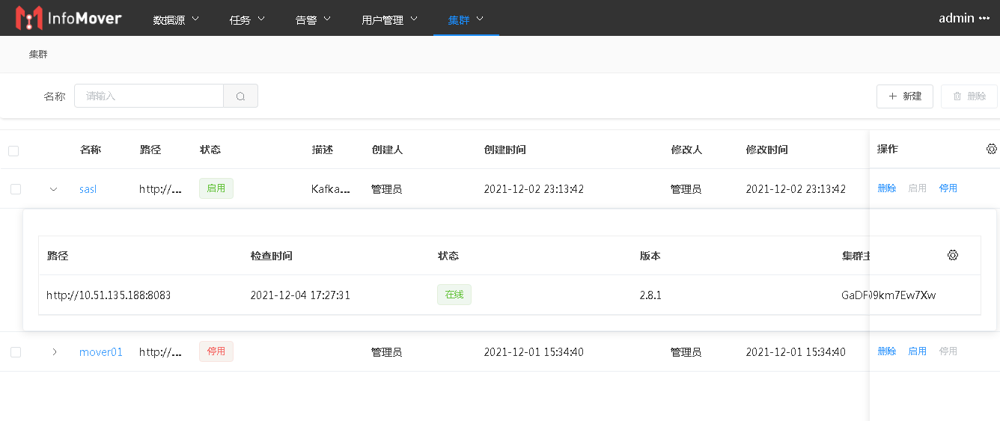
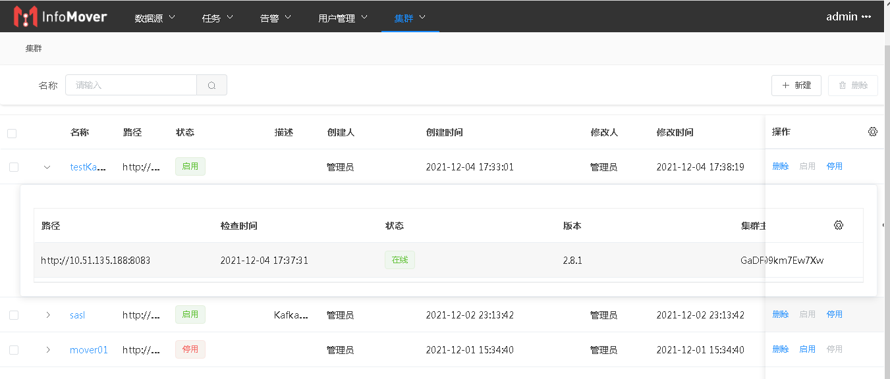
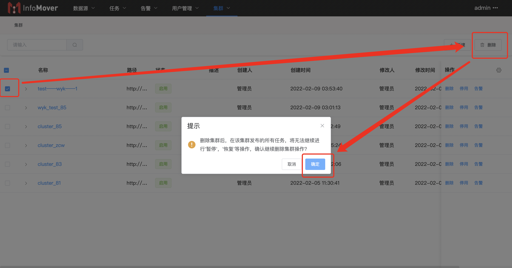
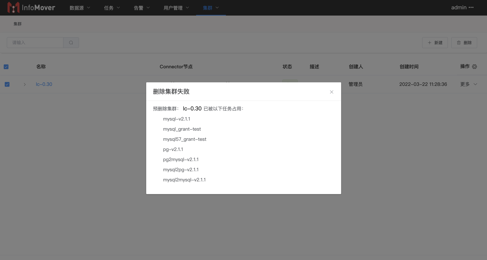

# 集群
# 集群管理
管理任务运行的Kafka集群的连接信息，监测集群状态。

# 新建集群
点击“新建”按钮，输入集群信息并保存。

| 参数名称 | 输入示例 | 参数解释 |
|---|---|---|
| 名称 | testKafka | 集群名称，必填，为唯一标识 |
| 描述 | 测试Kafka集群配置 | 集群描述，非必填 |
| Connector节点 | http://10.51.135.188:8083 | 部署的Connector节点 |
| bootStrap节点 | kafka-node:9093 | Connector节点运行使用的Kafka集群 |
| 安全协议 | SASL_PLAINTEXT | |
| 验证机制 | SCRAM-SHA-256 | |
| 登陆模式 | ScramLoginModule | 选择对应的登陆模式 |
| 用户名 | Admin | |
| 密码 | 123456 |
保存后，系统定期检测连接状态并显示。

# 删除集群
勾选需要删除的集群，点击“删除”按钮，确认。
️删除集群后，在该集群发布的所有任务，将无法继续进行'暂停'，'恢复'等操作。

如集群正在运行任务，则会删除失败，并提示集群中运行的任务列表：
